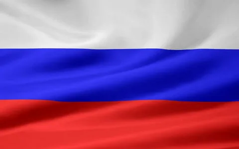

Russland, das flächenmäßig größte Land der Erde, ist ein faszinierender Kontinent voller Geschichte, Kultur und natürlicher Schönheit.
Von den majestätischen Schneebergen des Ural bis zu den weiten Steppen Sibiriens, von den geschichtsträchtigen Städten Moskau und St.
Petersburg bis hin zu den abgelegenen Dörfern, bietet Russland eine Vielfalt, die ihresgleichen sucht.
Als Brücke zwischen Europa und Asien ist Russland ein Land voller Kontraste und Widersprüche. Einerseits ist es eine Großmacht
mit beeindruckender militärischer Stärke und wirtschaftlichem Potenzial, andererseits kämpft es mit sozialen Ungleichheiten,
Korruption und einem schwierigen Verhältnis zum Westen. Doch gerade diese Komplexität macht Russland zu einem so faszinierenden Reiseziel
für Unternehmer, Politiker und Kulturinteressierte.

GEOGRAPHIE UND KLIMA
Russland erstreckt sich über einen riesigen geografischen Raum, der sich vom Nordpolarmeer bis zum Schwarzen Meer und vom Baltikum
bis zum Pazifik erstreckt. Das flächenmäßig größte Land der Erde bietet eine beeindruckende Vielfalt an Landschaften, vom endlosen
Taiga-Wald im Norden bis hin zu den schneebedeckten Gipfeln des Kaukasus-Gebirges im Süden. Das Klima variiert ebenfalls erheblich - während der Norden
von Permafrost und arktischen Temperaturen geprägt ist, herrscht im Südosten kontinentales Klima mit heißen Sommern und kalten Wintern.
Die geologische Vielfalt Russlands ist ebenso beeindruckend. Das Land beherbergt riesige Vorkommen
an Bodenschätzen wie Kohle, Erdöl, Edelmetallen und Diamanten, die für die Wirtschaft von großer Bedeutung sind.
Gleichzeitig gibt es aber auch empfindliche Ökosysteme wie die Taiga und die Tundra, die es zu schützen gilt.

Das kontinentale Klima führt zu extremen Temperaturschwankungen über das Jahr hinweg. Im Winter können
die Temperaturen in den nördlichen Regionen auf unter -40°C fallen, während im Sommer in den Südregionen Rekordtemperaturen
von über 40°C erreicht werden können. Diese Kontraste stellen eine große Herausforderung für Mensch und Natur dar und erfordern
eine entsprechend angepasste Infrastruktur und Lebensweise.

REGIERUNG UND POLITIK
Russlands politisches System und Einfluss auf die Welt
Russland ist eine föderale Präsidialrepublik mit einer starken Exekutive, angeführt vom Präsidenten. Der Präsident hat erhebliche Befugnisse,
einschließlich der Ernennung des Premierministers und anderer hochrangiger Beamter. Das russische Parlament, die Föderalversammlung,
besteht aus zwei Kammern - dem Föderationsrat und der Staatsduma. Obwohl das Parlament formell Gesetze verabschiedet, übt der Präsident
einen starken Einfluss auf den politischen Prozess aus.
Russland ist eine Großmacht, die eine einflussreiche Rolle in der internationalen Politik spielt. Als ständiges Mitglied des UN-Sicherheitsrats
hat Russland ein Vetorecht bei wichtigen Entscheidungen. Außerdem ist Russland Mitglied in vielen wichtigen internationalen Organisationen wie der G8,
der G20 und der BRICS-Gruppe. Moskau verfolgt eine unabhängige Außenpolitik und ist bestrebt, seine Interessen auf der globalen Bühne durchzusetzen.
Einfluss des Kremls und Herausforderungen der Demokratie
Der Kreml, der Regierungssitz in Moskau, ist das politische Machtzentrum Russlands. Von hier aus lenkt der Präsident die Geschicke des Landes.
In den letzten Jahren wurde die Konzentration der Macht im Kreml kritisiert, da sie die Checks and Balances des politischen Systems untergräbt
und die Demokratie gefährdet. Die Einschränkung der Pressefreiheit, das Vorgehen gegen Oppositionelle und der Abbau unabhängiger Institutionen
sind Anzeichen dafür, dass der Kreml seinen Griff auf die Macht festigt.
Dennoch gibt es in Russland eine aktive Zivilgesellschaft, die für mehr Demokratie und Rechtsstaatlichkeit eintritt.
Trotz Repressionen engagieren sich viele Bürger für ihre Rechte und Freiheiten. Die Zukunft der russischen Demokratie bleibt ein kontroverses Thema,
das die Welt mit Spannung beobachtet.
Regionale Unterschiede und ethnische Vielfalt
Russland ist ein riesiges Land mit einer enormen ethnischen Vielfalt. Neben den ethnischen Russen leben in Russland über 190 verschiedene Völker
und Nationalitäten. Viele von ihnen haben in ihren Heimatregionen eigene Sprachen, Kulturen und Traditionen.
Diese regionale Diversität prägt nicht nur das gesellschaftliche Leben, sondern stellt auch eine Herausforderung für die russische Einheitlichkeit dar.
In den letzten Jahrzehnten gab es immer wieder Spannungen zwischen dem Zentrum Moskau und den Regionen.
Einige autonome Republiken und Gebiete streben nach mehr Selbstbestimmung, was zu Konflikten mit der Zentralregierung führen kann.
Der Kreml versucht, die Kontrolle über das riesige Land zu behalten, indem er die föderale Struktur straff organisiert und regionale
Eigenständigkeit begrenzt.
Bildung und Wissenschaft
Russlands Bildungssystem ist eines der leistungsstärksten der Welt. Das Land verfügt über ein Netzwerk renommierter
Universitäten und Forschungseinrichtungen, die zum Teil auf eine lange Tradition zurückblicken. Insbesondere in den
Bereichen Naturwissenschaften, Mathematik und Ingenieurwesen haben russische Forscher und Akademiker weltweit große Anerkennung erlangt.
Zu den bekanntesten Universitäten zählen die Lomonossow-Universität in Moskau, die Staatliche Universität Sankt Petersburg sowie
die Bauman-Technische Universität Moskau. Diese Hochschulen zeichnen sich durch exzellente Lehre, hochmoderne Labore und
Forschungsinfrastruktur sowie einen starken interdisziplinären Ansatz aus. Viele russische Universitäten genießen international
einen ausgezeichneten Ruf und ziehen Studierende aus der ganzen Welt an.
Darüber hinaus hat Russland eine Vielzahl renommierter Forschungsinstitute wie das Ioffe-Physikalisch-Technische Institut,
das Kurtschatow-Institut für Kernenergie oder das Pawlow-Institut für Physiologie, die auf ihren Gebieten Pionierarbeit leisten.
Die Forschungslandschaft profitiert von einer starken staatlichen Förderung und Investitionen in zukunftsweisende Technologien.
Kunst und Literatur
Russland hat eine lange und faszinierende Tradition in den Bereichen Kunst und Literatur, die weltweit bewundert und geschätzt wird.
Vom beeindruckenden Erbe der russischen Avantgarde und dem Realismus des 19.
Jahrhunderts bis hin zu modernen Strömungen - Russlands kreative Vielfalt ist bemerkenswert.
In der Malerei haben Künstler wie Wassily Kandinsky, Kasimir Malewitsch und Iwan Schamjakin Meilensteine
gesetzt und die internationale Kunstwelt nachhaltig geprägt. Ihre innovativen, oft abstrakten Werke zeugen von einem tiefen Verständnis für Farbe,
Form und Komposition. Darüber hinaus hat Russland auch eine reiche Tradition in den darstellenden Künsten wie Tanz, Oper und Theater hervorgebracht.
Berühmte russische Ballett-Ikonen wie Baryschnikow und Nureyev haben die Tanzwelt revolutioniert.
Ebenso beeindruckend ist Russlands Literaturgeschichte, die mit Giganten wie Dostojewski, Tolstoi, Tschechow und Solschenizyn aufwarten kann.
Diese Autoren haben mit ihren Meisterwerken die Weltliteratur entscheidend geprägt und neue Maßstäbe für psychologische Tiefe,
soziale Analyse und sprachliche Virtuosität gesetzt. Moderne Schriftsteller wie Boris Akunin, Ljudmilla Ulitzkaja und Wladimir Sorokin
führen diese Tradition in eindrucksvoller Weise fort und erweitern sie um neue Themen und Erzählformen.
Tourismus und Sehenswürdigkeiten
Russland ist ein Land voller faszinierenden Sehenswürdigkeiten und Naturwunder, die Besucher aus der ganzen Welt anziehen.
Die Hauptstädte Moskau und Sankt Petersburg beeindrucken mit ihrer einzigartigen Architektur, historischen Bauwerken und pulsierenden Städtelebens.
Der Kreml in Moskau, die Eremitage in Sankt Petersburg und das legendäre Bolschoi-Theater sind nur einige der Highlights,
die Kulturliebhaber in ihren Bann ziehen.
Darüber hinaus bietet Russland eine atemberaubende Naturlandschaft, die ihresgleichen sucht. Der tiefblaue Baikalsee,
die vulkanische Halbinsel Kamtschatka und die endlose Taiga Sibiriens sind faszinierende Reiseziele für Abenteuerlustige und Naturfreunde.
Ob in den Städten oder in der Natur, Russland ist ein Land voller Kontraste und Überraschungen, das Reisende in seinen Bann zieht.
Russland in der Welt
1. Geopolitische Macht
Als größtes Land der Welt und ständiges Mitglied des UN-Sicherheitsrates ist Russland ein einflussreicher globaler Akteur.
Mit seinem enormen Potenzial an Bodenschätzen, militärischer Stärke und nuklearen Waffen zählt Russland zu den Supermächten,
die die Weltpolitik maßgeblich mitgestalten. Moskau spielt eine wichtige Rolle in vielen internationalen Konflikten und Krisen,
von der Ukraine bis zum Nahen Osten.
2. Wirtschaftliche Bedeutung
Obwohl Russland nicht mehr die wirtschaftliche Supermacht der Sowjetära ist, bleibt es aufgrund seiner riesigen Öl- und Gasvorkommen,
seiner Rohstoffexporte und seiner Rolle als wichtiger Handelspartner von globaler Bedeutung. Als eine der größten Volkswirtschaften der
Welt ist Russland für viele Unternehmen ein lukrativer Absatzmarkt. Gleichzeitig haben russische Konzerne wie Gazprom, Rosneft oder Lukoil
internationale Bedeutung erlangt.
3. Kulturelle Ausstrahlung
Russland hat eine reiche und einflussreiche Kulturtradition, die weit über seine Grenzen hinausstrahlt.
Von der Literatur über die Musik bis hin zur Architektur und Kunst haben russische Künstler und Denker weltweit Spuren hinterlassen.
Auch im Bereich des Sports, insbesondere im Eishockey, Fußball und Ballett, genießt Russland hohes internationales Ansehen.
Die russische Kultur übt auf viele Menschen eine große Faszination aus.
4. Weltweite Vernetzung
Trotz politischer Spannungen ist Russland in vielen globalen Organisationen und Netzwerken eingebunden, sei es bei den Vereinten Nationen,
der G20 oder der Shanghaier Organisation für Zusammenarbeit. Russland nutzt diese Plattformen,
um seine Interessen international zu vertreten und zu fördern. Gleichzeitig ist Russland durch Migrationsbewegungen,
Tourismusströme und den digitalen Austausch eng mit der Welt verbunden.